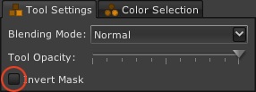

Inversione delle maschere
8 di 10
Generalmente la maschera è usata per limitare l'effetto di uno strumento alle regioni interne alla maschera. Tuttavia la maschera può essere usata anche per selezionare un'area della foto a cui non applicare l'effetto di uno strumento. Per farlo, è necessario invertire una maschera.
Per invertire una maschera per uno strumento:
- Selezionare lo strumento per cui si vuole invertire la maschera facendo clic sulla sua barra del titolo.
- Verificare che la scheda Impostazioni strumento sia selezionata.
- Fare clic sulla casella Inverti maschera dello strumento.
